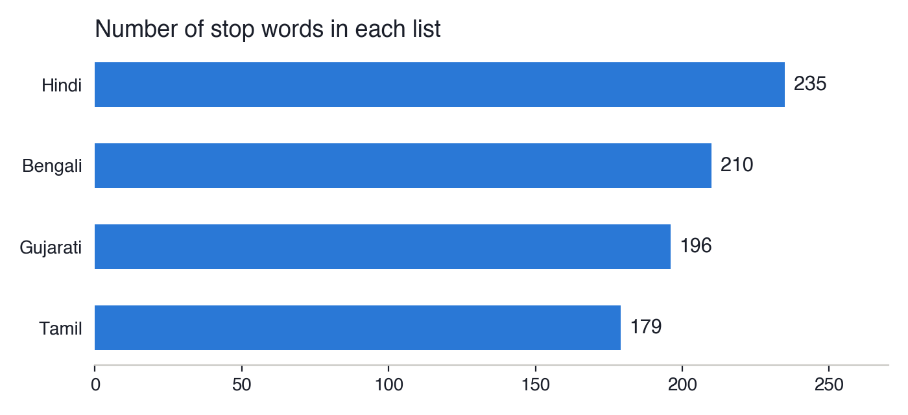
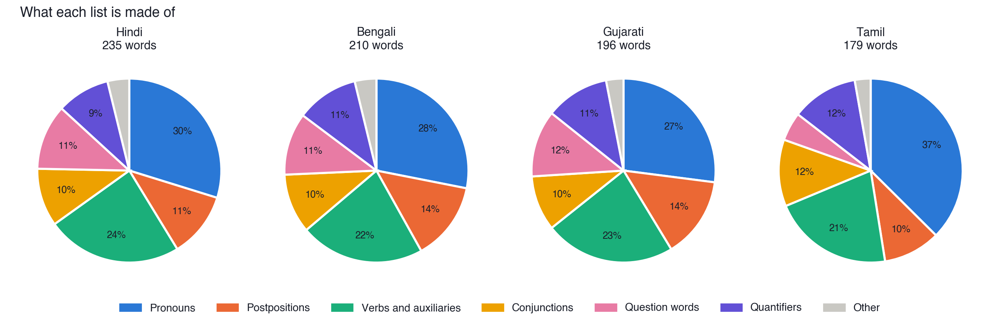
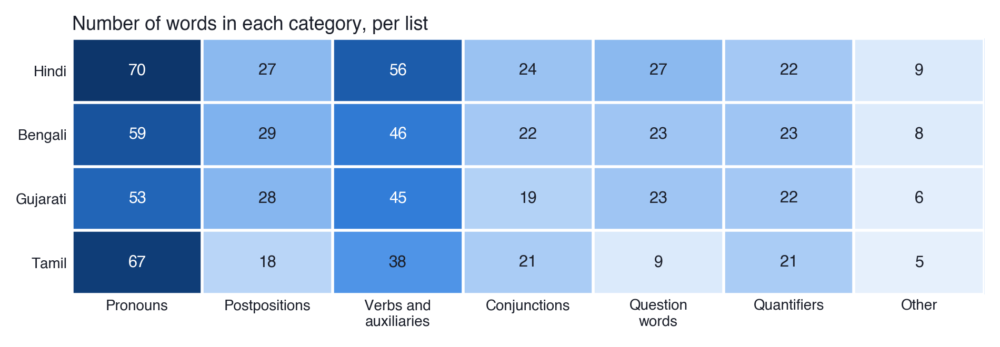

Assignment 01
Indic Stop Words: Hindi, Bengali, Gujarati and Tamil
Abstract. Stop words are the small, very frequent words of a language, such as “and”, “of” and “is”, that are usually removed before counting or comparing the words of a text. I wrote stop-word lists for four Indic languages in four scripts: Hindi, Bengali and Gujarati, which are Indo-Aryan, and Tamil, which is Dravidian. Each list is grouped by kind of word and comes with a small function that removes the stop words from a sentence.
What I did
I followed the template in the instructions: one file per language, named after the language, with the header and the list. Inside each list the words are grouped by type (pronouns, postpositions, conjunctions, question words, quantifiers, auxiliary verbs and particles), so it is easy to see what the list contains and to change it later.
Two practical details mattered. Spellings vary, so I kept common variants together (गए / गये, কখনো / কখনও). And the same letter can be typed in two ways in Unicode, so the Bengali, Gujarati and Tamil files normalise the text before comparing words.
Visualisations



My interpretation
Making four lists side by side showed me that a “small word” is not the same thing in every language. In Hindi, postpositions like का, में, से are separate words, so they fit easily into a list. In Tamil the same meanings are mostly endings joined to the noun, which is why the Tamil list has only 18 postpositions and 9 question words: many Tamil questions are made with a suffix rather than a separate word.
I also had to decide what a stop word is for. Negation words such as नहीं are very frequent, but removing them reverses the meaning of a sentence. I kept them in the lists and marked them, so that someone doing sentiment analysis knows to take them out.
A list only tells you what I expected the language to need. To see how the lists behave on real text I tested them in Assignment 05.
Files
hindi_stopwords.py: Hindi, Devanagari scriptbengali_stopwords.py: Bengali, Bengali scriptgujarati_stopwords.py: Gujarati, Gujarati scripttamil_stopwords.py: Tamil, Tamil scriptvisualise.py: the charts on this page